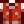
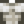

Clinique d’Harvey

La Clinique d’Harvey se situe au centre de Pélican Ville, à coté du Magasin général de Pierre. Harvey vit et travaille à la clinique. Maru y travaille aussi les Mardi et Jeudi. Ils se plaignent souvent du manque de patients.
La plupart des villageois se rendent à la clinique pour leur visite de contrôle annuelle. George et Evelyn vont à la clinique une fois par saison.
Bien que vous puissiez entrer dans la clinique presque tous les jours entre 9h et 15h, vous ne pouvez acheter de fournitures médicales que si Maru ou Harvey se trouvent derrière le comptoir.
Médicaments
Offrir des médicaments est possible mais sachez qu'ils font partie des cadeaux universellement détestés.
| Image | Nom | Description | Effets | Prix d'achat | Prix de vente | Autre sources |
|---|---|---|---|---|---|---|
| Boisson énérgétique | Restaure beaucoup d’énergie. |
| ||||
| Remède musculaire | Lorsque À boire quand le corps est fatigué pour supprimer "l'épuisement." |
|
|
Couture
La Boisson énérgétique peut être utilisée dans la bobine de la machine à coudre pour créer la  Veste de sportif. Elle peut aussi être utilisée comme Teinture, servant de colorant rouge aux pots de teinture, situés dans la maison d'Emily et Haley, au 2 allée des Saules.
Le Remède musculaire peut être utilisé dans la bobine de la machine à coudre pour créer le  T-shirt de faux muscles, pouvant être teint. Il peut aussi être utilisé comme Teinture, servant de colorant jaune aux pots de teinture, situés dans la maison d'Emily et Haley, au 2 allée des Saules.
Rencontres
Notez que l'heure de début correspond au moment où le villageois quitte son domicile pour se rendre à la clinique et l'heure de fin au moment où le il quitte la clinique.
Printemps
|
Été
|
Automne
|
Hiver
|
Galerie
Intérieur de la clinique

Appartement d'Harvey
Bugs
Si vous vous évanouissez avec votre santé à 0 tout en étant sur votre cheval, vous et votre cheval serez transportés à la Clinique. le cheval y sera bloqué jusqu'au matin suivant où se retrouvera de nouveau dans son étable.
Historique
- 1.3.32 : La croix rouge sur le devant du bâtiment est devenue bleu. Les croix rouges à l'intérieur sont devenues vertes ou sont désaturées.
- 1.4 : Boisson énérgétique et Remède musculaire peuvent maintenant être utilisés en couture.
- 1.6 : Boisson énérgétique et Remède musculaire sont maintenant vendus au Festival du désert.
- 1.6.4 : La Boisson énérgétique ne redonne plus de santé.